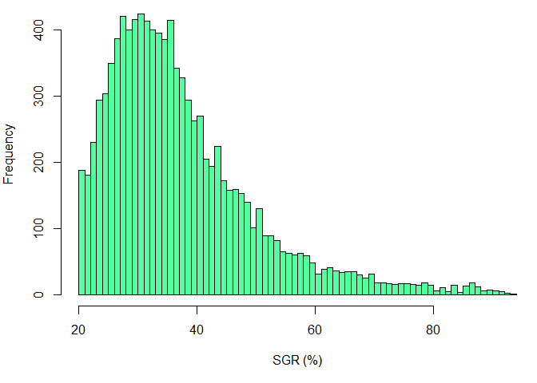
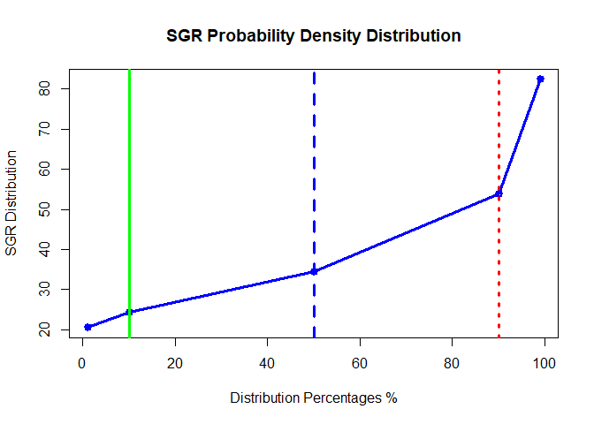
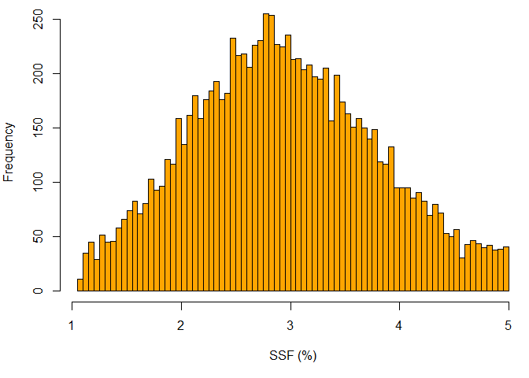
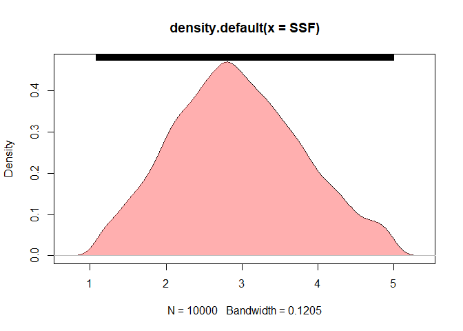
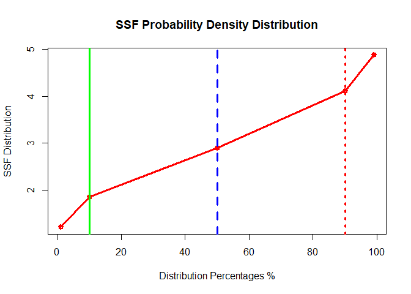

Fault Seal Analysis
AmrMoslim
2019-04-23
R Fault Seal Analysis Usong R “FSAR”
The most two famous and common processes to determine the fault seal analysis are Shale Gouge Ratio “SGR” and Shale Smear Factor “SSF”.
Data Input
library(mc2d)
### Inputs
Ftp90 <- 120 ### Meters ### FAULT THROW MINIMUM VALUE
Ftp10 <- 1000 ### Meters ### FAULT THROW MAXIMUM VALUE
Ltp90 <- 140 ### Meters ### LAYER THICKNESS MINIMUM VALUE
Ltp10 <- 500 ### Meters ### LAYER THICKNESS MAXIMUM VALUE
Ngp90 <- 20 ### % ### NET OVER GROSS MINIMUM VALUE
Ngp10 <- 60 ### % ### NET OVER GROSS MAXIMUM VALUEData Processing (Creating Monte Carlo Model)
n = 10000 ### NUMBER OF ITERATIONS
seed = 999 ### SEED
### Calculate the SD
Ftsd <- sd(Ftp90:Ftp10)
Ltsd <- sd(Ltp90:Ltp10)
ngsd <- sd(Ngp90:Ngp10)
### Calculate the Mean
Ftmean <- mean(Ftp90:Ftp10)
Ltmean <- mean(Ltp90:Ltp10)
ngmean <- mean(Ngp90:Ngp10)
### Fault throw Distribution
Ft = mcstoc(rnorm, mean=Ftmean, sd=Ftsd, rtrunc=TRUE, linf=Ftp90, lsup=Ftp10, seed = seed, nsv= n )
### Layer thickness Distribution
Lt = mcstoc(rnorm, mean=Ltmean, sd=Ltsd, rtrunc=TRUE, linf=Ltp90, lsup=Ltp10, seed = seed, nsv= n )
### NG Distribution
NG = mcstoc(rnorm, mean=ngmean, sd=ngsd, rtrunc=TRUE, linf=Ngp90, lsup=Ngp10, seed = seed, nsv= n)
par(mfrow=c(1,3))
#
# hist(Ft, xlab="Fault throw (m)", breaks=100, col="cyan", border = NA)
# hist(Lt, xlab="Layer Thickness (m)", breaks=100, col="red", border = NA)
# hist(NG, xlab="NG (%)", breaks=100, col="yellow", border = NA)
DENFT <- density(Ft)
DENLT <- density(Lt)
DENNG <- density(NG)
plot(DENFT, col="#ff606080", border=NA,xlab="Fault throw (m)",main = "Fault Throw Distribution")
polygon(DENFT, col="#ff606080", border=NA)
plot(DENLT, xlab="Layer Thickness (m)",main = "Layer Thickness Distribution")
polygon(DENLT, col="#6060ff80", border=NA)
plot(DENNG, xlab="NG (%)",main = "Net/Gross Distribution")
polygon(DENNG, col="#FFDF9F", border=NA)
Results and Outputs
Shale Gouge Ratio Claculation
SGR = (((100-NG)*Lt/Ft))
### Historgam plot for SGR
hist(SGR, xlab="SGR (%)", breaks=100, col="seagreen1")
### density plot for SGR
DENSGR <- density(SGR)
plot(DENSGR)
polygon(DENSGR, col="#ff606080", border=NA)
rug(SGR, side = 3)
abline(v=c(18,22),lwd = 3,col = c("green","red") , lty =c(1,3))
P<-summary(SGR, probs = c(0.01,0.1,0.50,0.9,0.99))
Pdata<- data.frame(unmc(P))
colnames(Pdata)<- c("Mean","SD","1%","10%","50%","90%","99%")
rownames(Pdata)[1] <- "SGR"
SGRdata <- as.data.frame(Pdata[3:7])
knitr::kable(Pdata[,1:7], digits = 0, caption = "SGR MC Distribution ",booktabs = TRUE)| Mean | SD | 1% | 10% | 50% | 90% | 99% | |
|---|---|---|---|---|---|---|---|
| SGR | 37 | 13 | 21 | 24 | 34 | 54 | 82 |
plot(x=c(1,10,50,90,99), y=Pdata[3:7], type="o",lwd = 3,
col="blue", main = "SGR Probability Density Distribution",
xlab = "Distribution Percentages %",
ylab = "SGR Distribution")
abline(v=c(10,50,90),lwd = 3,col = c("green","blue","red") , lty =c(1,2,3))
Shale Smear Factor Claculation
SSF = (Ft/((100-NG)*Lt))*100
### Histogram plot for SSF
hist(SSF, xlab="SSF (%)", breaks=100, col="orange")
### density plot for SSF
DENSSF <- density(SSF)
plot(DENSSF)
polygon(DENSSF, col="#ff606080", border=NA)
rug(SSF, side = 3)
SSFP<-summary(SSF, probs = c(0.01,0.1,0.50,0.9,0.99))
PSSFdata<- data.frame(unmc(SSFP), drop= TRUE)
colnames(PSSFdata)<- c("Mean","SD","1%","10%","50%","90%","99%")
rownames(PSSFdata)[1] <- "SSF"
SSFy5 = list(PSSFdata[3:7])
knitr::kable(PSSFdata[,1:7], digits = 0, caption = "SSF MC Distribution ",booktabs = TRUE)| Mean | SD | 1% | 10% | 50% | 90% | 99% | |
|---|---|---|---|---|---|---|---|
| SSF | 3 | 1 | 1 | 2 | 3 | 4 | 5 |
plot(x=c(1,10,50,90,99), y=PSSFdata[3:7], type = "o",col="red",lwd = 3, main = "SSF Probability Density Distribution",
xlab = "Distribution Percentages %",
ylab = "SSF Distribution")
abline(v=c(10,50,90),lwd = 3,col = c("green","blue","red") , lty =c(1,2,3))
References
Shinyapp has been created to calculate FSA Parameters automatically without the hassel of changing the code. You can just play with the essential parameters and you get all the results instantaneously.
Please dont hesitate to contact me over a_moslim@live.com to share your comments.